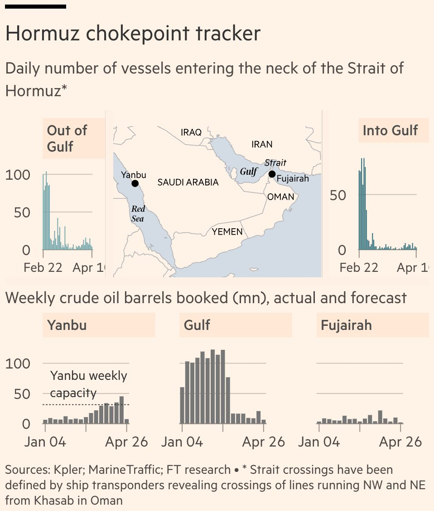
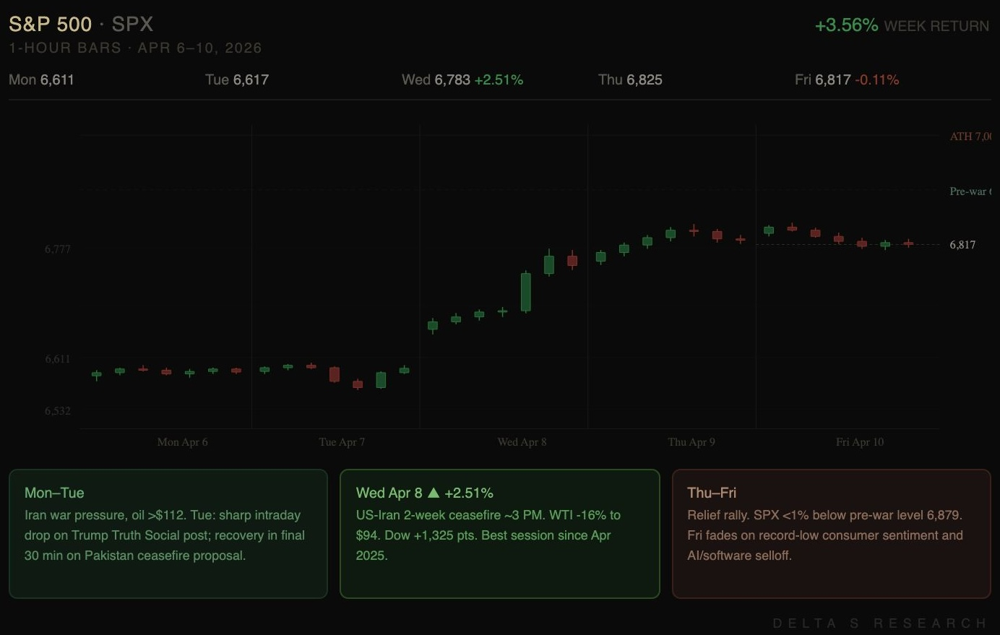

The week was defined by two days of near silence and three days of uncertainty following the ceasefire.
Monday and Tuesday were mostly quiet. The S&P spent most of the time bracketed just above 6,600, intraday behavior resembled the prior week's pattern, breadth was narrow, and there was no catalyst capable of resolving the directional uncertainty. But one thing to notice is that markets seemed to have adapted to a war environment and were gradually returning to a state of stability, contrary to the massive sell-offs and plunges in preceding weeks.

Then came a critical turning point. On Tuesday, markets still seemed stable enough as the clock ticked toward Trump's 8pm ET deadline, an ultimatum threatening to destroy Iran's bridges and power plants if no deal was reached. Iran's public posture remained defiant throughout the day, with the president declaring willingness to sacrifice himself and the IRGC warning of devastating retaliation if civilian infrastructure was targeted. With less than two hours remaining, Trump posted on Truth Social announcing a 14 day ceasefire. The Dow surged 2.85%, the S&P climbed 2.51% to 6,782, and the Nasdaq gained 2.80% in the final hour, marking the strongest single session since April 2025. WTI collapsed more than 16% to $94.41, its largest daily drop since April 2020. The VIX fell to 20.18, its lowest since before the conflict began.
Tuesday was doing double duty. Earlier in the session, Broadcom had already gained more than 6% after the market fully priced in its Monday after hours announcement: a long term deal to supply custom AI chips for Google's future TPU generations, along with an expanded deal with Anthropic providing the AI startup access to 3.5 gigawatts of computing capacity starting in 2027.
Wednesday opened as a full blown risk-on session. Semiconductor names vulnerable to supply chain disruptions climbed sharply, SMH jumping more than 5%, Broadcom adding a further 5% on top of Tuesday's move, Micron up more than 7%. Energy stocks that had led the market through the conflict retreated. Gold climbed 2.8% even as oil dropped, with the metals complex pricing in persistent inflation concerns rather than a clean safe haven unwind.
Thursday extended the rally despite growing uncertainty around Hormuz traffic. Iran signaled that it could charge a toll of $1 per barrel, payable in cryptocurrency, for ships transiting the strait. A dilemma for oil shippers: paying the toll would violate US sanctions, but not paying offered no guarantee of safe passage. The White House pushed back, with press secretary Karoline Leavitt stating the ceasefire required the strait to be open without limitation, including tolls. WTI rebounded toward $98 as actual tanker traffic remained far below pre war levels. But equities seemed little affected. The S&P added 0.62% to close at 6,824.66.
On Friday, March CPI printed 0.9% MoM, the largest monthly increase since the cost-of-living surge in 2022. The surge was almost entirely steered by energy, which rose 10.9% on the month. Core was reported to be at 0.2%, a tenth below consensus, indicating that the inflationary pressure remained concentrated in war-afflicted energy costs rather than suggesting any broader deterioration in the wider economy. With core remaining mostly anchored, the Fed has little pressure to act in either direction.
Markets absorbed the data without significant reaction. The S&P opened modestly higher before fading through the session, closing down 0.11% at 6,817 and ending a 7-day winning streak. The Nasdaq finished up 0.35%, supported by semiconductor names. The Dow underperformed at 0.56% lower, weighed by industrials and transports where cost pressures from the conflict remain most visible. For the week, the S&P gained 3.6% and the Nasdaq 4.7%, the strongest weekly performance for both indices since November.

Positioning
The first half of the week favored premium selling. IV was elevated but price lacked direction. We ran short premium in NVDA and a defined risk spread in AVGO, both structured to capture the gap between implied and realized volatility in the absence of a catalyst.
When the ceasefire hit and IV crushed on Wednesday, both positions were closed. The edge mostly comes from vega but not holding until expiry. Once a volatility event clears and IV compresses, staying in the position means taking on a second headline cycle's worth of delta and vega risk for marginal theta.
Post ceasefire, the environment shifted. IV repriced lower but not to pre-war levels. A VIX above 20 reflects a market that believes the ceasefire is real but fragile. That creates a different kind of opportunity: selling overpriced options where IV still prices in a level of uncertainty that the underlying has stopped expressing.
We repositioned into GLD, MU, NET, and extended duration in NVDA. Gold is an interesting case. The intuitive expectation was that a ceasefire would weigh on safe haven assets. Instead, it rose. The inflation channel remains open even if the geopolitical channel partially closed. The semiconductor and networking names reflect a base case that the post ceasefire range holds through mid April.
Takeaways
Binary events sustain elevated IV and are nearly impossible to time. The right move is almost always to close short options positions before the event resolves, not because the direction is wrong, but because post-event IV crush can erode a position even when the underlying moves favorably. When price gaps through the strikes while volatility collapses, delta and vega losses compound simultaneously.
Both the NVDA and AVGO positions achieved this ideal outcome: the underlying appreciated and IV compressed simultaneously. This should be treated as an exception rather than the rule. Had the ceasefire not materialized, both positions would have sustained compounding losses on both fronts.
Looking Ahead
The critical variable is whether the ceasefire holds. Iran's parliamentary speaker has already signaled objections, and oil rebounded Thursday as tanker access remained restricted. A breakdown before the two week window closes would likely reverse a substantial portion of Wednesday's move and spike IV again.
March CPI came in softer than previously feared, with the headline restrained despite lingering energy pressures pertinent to the Hormuz closure, and core printing a tenth below consensus. The Fed is likely to look through any residual energy noise and anchor on the contained inflation trend. The release has pushed fed funds futures lower and SOFR yields have edged down 2 to 3 bps on the day, a moderate but directionally clear repricing toward earlier cuts. The Fed's posture is tilting dovish, though not aggressively, and the direction is now cleaner than it was a week ago.
The key variable going forward is still the trajectory of the conflict, in particular any ceasefire developments. Economists note that even if the war subsides, inflationary pressures from energy could take weeks or months to adjust. A prolonged disruption, however, raises the risk of broader price pressures spreading into goods and services.
For now, headline and core are telling different stories, but that divergence holds only if oil stays below the level at which sustained energy costs begin feeding into services and goods prices. In this environment, short premium strategies can still be viable, but they require tighter, more active risk management. The macro environment is cleaner than before, but it remains far from stable.
Our positioning reflects a reasonable conjecture that the ceasefire holds through mid April and that semiconductors, gold, and networking names continue to range within their post ceasefire levels.